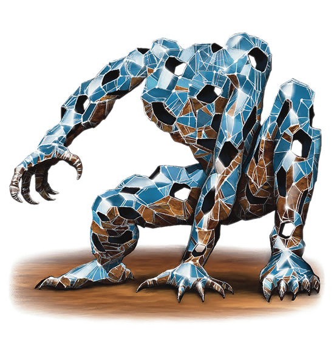

Silexia
Extremely deadly, the Silexia renders its prey to ribbons with its assassin-worthy tactics and skill. It attacks by shattering itself into a self-controllable mass of glass shards, and strikes against its unlucky prey by piercing into their bodies from all sides.


Lustrius
The Lustrius is a particularly deadly X'Tal that can only be described as relentless and unpredictable, it’s very movements leaving a blinding trail of light every way it goes. Its superior speed serves as its primary defense, as its frail body succumbs easily to focused fire.